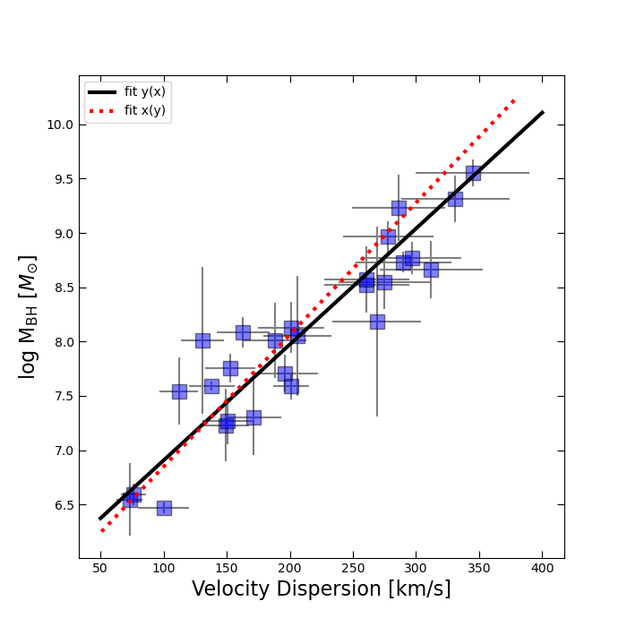
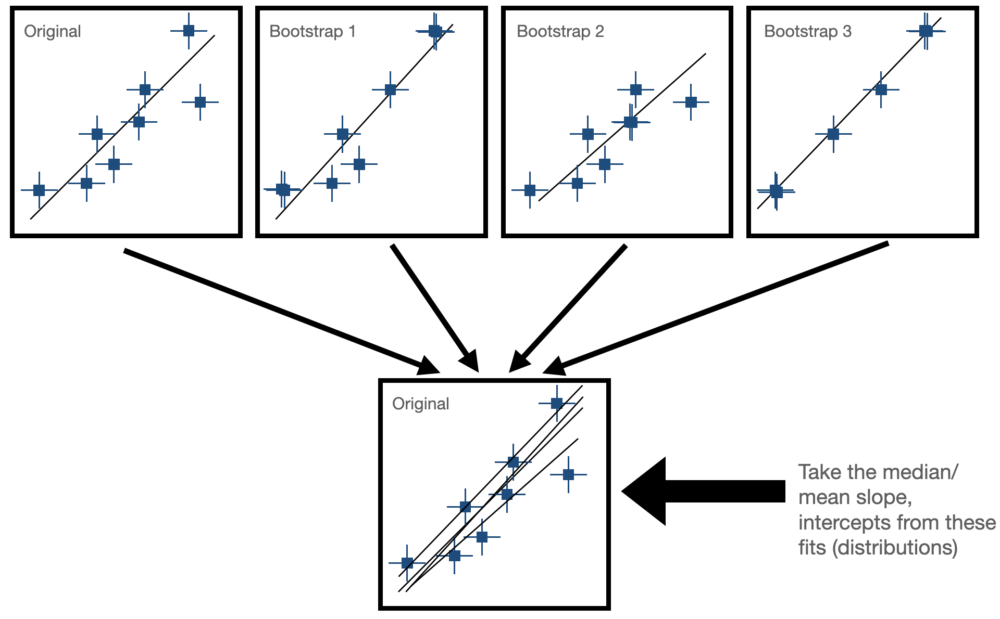
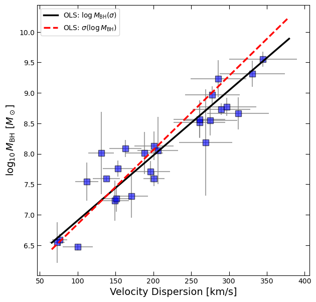
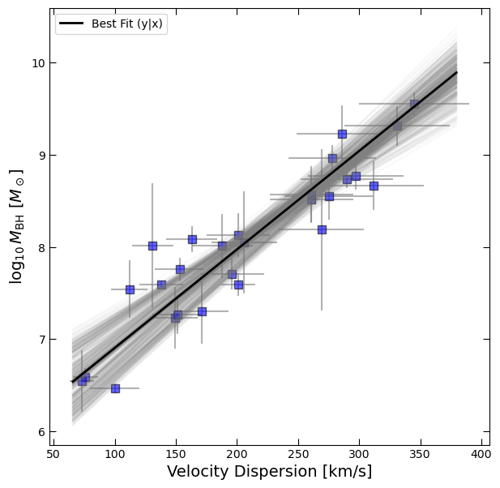
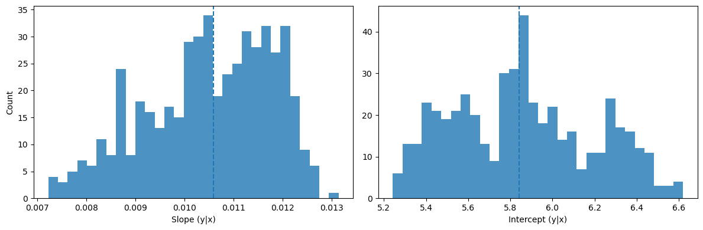
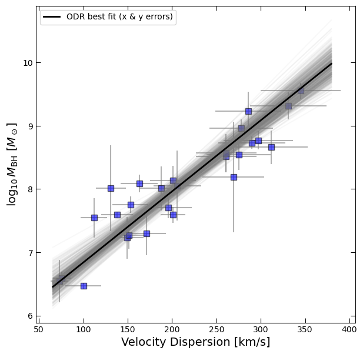
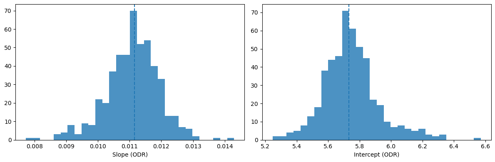
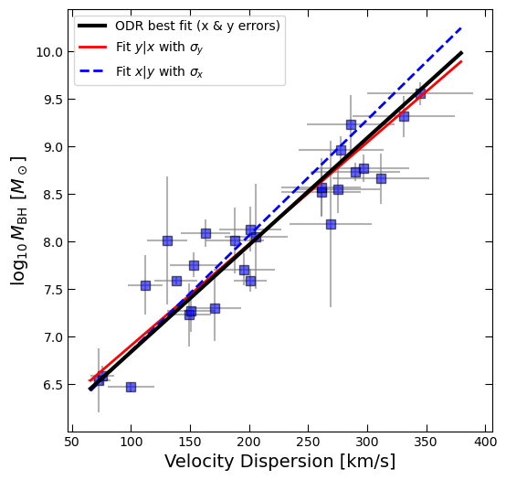

Estimating Uncertainty in the Black Hole Mass–Velocity Dispersion Relation#
Learning Objectives
Understand and implement bootstrap resampling to assess model uncertainty.
Practice using numpy to generate random samples.
Fit and interpret linear models.
Visualize parameter distributions to quantify fit variability.
Introduction#
The M-sigma relation, also known as the black hole mass-velocity dispersion relation, is an empirical correlation observed between the mass of supermassive black holes (\(M_{bh}\)) at the centers of galaxies and the velocity dispersion (\(\sigma\)) of stars in the bulges of those galaxies. This relationship suggests that there is a tight connection between the properties of galaxies and the central black holes they host. Specifically, galaxies with larger velocity dispersions tend to harbor more massive black holes at their centers.
The M-\(\sigma\) relation has profound implications for our understanding of galaxy formation and evolution, as well as the co-evolution of galaxies and their central black holes. It provides valuable insights into the mechanisms governing the growth and regulation of supermassive black holes, the role of feedback processes in galaxy evolution, and the relationship between the properties of galactic bulges and their central black holes.
Loading the data#
We’ll begin by loading some measurements of black hole mass (M_bh) and bulge velocity dispersion (sigma) for a set of nearby galaxies.
Important
Use the pandas library to load the m-sigma.txt file as a DataFrame (download here); it will read in with column names.
import numpy as np
import pandas as pd
import matplotlib.pyplot as plt
df = pd.read_csv('m-sigma.txt')
df.head()
| Galaxy | M_bh | sigma | sigma_err | M_bh_err | |
|---|---|---|---|---|---|
| 0 | MW | 2950000.0 | 100 | 20 | 350000.0 |
| 1 | I1459 | 460000000.0 | 312 | 41 | 280000000.0 |
| 2 | N221 | 3900000.0 | 76 | 10 | 900000.0 |
| 3 | N3115 | 920000000.0 | 278 | 36 | 300000000.0 |
| 4 | N3379 | 135000000.0 | 201 | 26 | 73000000.0 |
Linear Regression#
Linear regression just means “let’s fit a line”! It’s a statistical method used to model the relationship between a dependent variable (often denoted as ‘y’) and one or more independent variables (often denoted as ‘x’). It assumes that the relationship between the variables can be described by a linear equation, such as a straight line in the case of simple linear regression. Like an inference task, the goal of linear regression is to find the best-fitting line that minimizes the differences between the observed values and the values predicted by the model.
For the simpliest case of a straight line, aka a first order polynomial, we can describe our model using two parameters: slope and intercept. In the case of the M-sigma relation, these fit parameters can be used to constrain our models of galaxy and black hole co-evolution.
How can we implement this in Python?#
There are many ways you can perform linear regression in Python! np.polyfit is a function in NumPy used for polynomial regression, which fits a polynomial curve to a set of data points. In the context of linear regression, np.polyfit can fit a polynomial of degree 1 (a straight line) to the given data points by minimizing the sum of squared errors between the observed and predicted values. This function returns the coefficients of the polynomial that best fits the data, allowing us to determine the slope and intercept of the regression line.
Exercise 1: Fitting the M-\(\sigma\) Relation
We will apply the concept of linear regression to analyze the M-sigma relation using observational data. We have provided a dataset containing measurements of black hole masses (M_bh), velocity dispersions (sigma), and their associated uncertainties. Your task is to perform linear regression to fit both the black hole mass as a function of velocity dispersion (M_bh vs. sigma) and velocity dispersion as a function of black hole mass (sigma vs. M_bh).
Prepare the Data: Inspect the first few rows of the Pandas DataFrame to familiarize yourself with the structure of the data. The M-sigma relation is typically plotted with the black hole masses in
logform, so you will need to convert your data to logspace before fitting the relation. Add new columns to the DataFrame representing log(M_bh) and the error on log(M_bh).
Hint
Hint: Error Propagation in Logspace In order to compute the error on log(M_bh), we will need to propagate the error when taking the logarithm (base 10). The formula that describes this is as follows: $\( \sigma_{\log_{10}(x)} = \frac{1}{\ln(10) \cdot x} \cdot \sigma_x \)$ The above will give you the uncertainty on the logarithm of the black hole mass, and you can store this in the DataFrame.
Plot the Data: Create a scatter plot of the log of the black hole mass (log(M_bh)) against velocity dispersion (sigma), with error bars representing the uncertainties in both quantities.
Perform Linear Regression: In standard least-squares regression, uncertainties are only applied to the dependent variable (y). This means that if you fit \(M_{\mathrm{bh}}\) as a function of \(\sigma\), the method only accounts for uncertainties in \(M_{\mathrm{bh}}\), while ignoring errors in \(\sigma\). But both \(M_{\mathrm{bh}}\) and \(\sigma\) have significant measurement uncertainties in our dataset. To explore this limitation, we will fit the relation in both directions. This is not the same as taking the inverse of one fit. Each regression is a different model that incorporates errors on different variables.
Fit a linear regression model to the data, treating M_bh as the dependent variable (y) and sigma as the independent variable (x) and incorporate the errors on sigma in the fit.
Fit another linear regression model, treating sigma as the dependent variable (y) and M_bh as the independent variable (x) and incorporate the errors on M_bh in the fit.
Hint
Hint: Incorporating Errors in the Fit
Look into the weights keyword argument for np.polyfit to figure out how to incorporate errors.
Visualize the Results: Plot the regression lines along with the data points to observe how well they fit the M-sigma relation. Compare the slopes and intercepts of the regression lines for both fits.
Beyond a Single Best-Fit Line: Representing Uncertainty in our Fit#
By now you should have produced a figure resembling the one below:

In our linear fits, we were only able to account for errors in one variable at a time. Standard least squares regression assumes that all uncertainty lies along the dependent variable (the y-axis). But in the M–\(\sigma\) relation, both quantities (black hole mass and velocity dispersion) have significant observational uncertainties. To explore this, we asked you to fit the relation in two directions: \(M_{\mathrm{bh}}(\sigma)\) and \(\sigma(M_{\mathrm{bh}})\).
As you probably noticed, these two fits give very different slopes! Neither is “more correct” than the other. Rather, the discrepancy reflects the fact that our data are noisy in both dimensions, and with limited data we cannot uniquely pin down the “true” relation. What we can say is that there is uncertainty in the fitted parameters of the M–\(\sigma\) relation.
Up to this point we’ve been thinking about measurement errors (the observational error bars on each galaxy’s \(M_{\mathrm{bh}}\) and \(\sigma\)). But there is a second kind of uncertainty that arises in astronomy: sample variance. If you repeated the experiment with a different set of galaxies, you might measure a slightly different relation. Since we cannot observe every galaxy in the universe, we need a way to estimate how much our finite sample might bias or vary our results.
This is where bootstrap resampling comes in. Bootstrapping provides a way to simulate many alternative versions of our dataset and quantify how much the fitted parameters (slope and intercept) might change from sample to sample. Instead of quoting a single slope, we can quote a slope with an uncertainty range based on the distribution of slopes recovered from many bootstrap resamples.
Bootstrap Resampling#
Bootstrapping is a resampling technique used in statistics to estimate the sampling distribution of a statistic by repeatedly sampling with replacement from the observed data. It is particularly useful when the underlying population distribution is unknown or difficult to model. There are two general steps needed for bootstrap resampling:
Sample Creation: Bootstrapping starts with the creation of multiple bootstrap samples by randomly selecting observations from the original dataset with replacement. This means that each observation in the original dataset has the same chance of being selected for each bootstrap sample, and some observations may be selected multiple times while others may not be selected at all.
Statistical Estimation: After creating the bootstrap samples, the statistic of interest (e.g., mean, median, standard deviation, regression coefficient) is calculated for each bootstrap sample. This results in a distribution of the statistic across the bootstrap samples, known as the bootstrap distribution. In our case, this would be fitting our line to the data and seeing how much the paramters (slope and intercept) change for each fit. Now, we have some way of expressing uncertainty in our fitted parameters!
The goal for this next exercise is to use bootstrapping to estimate the uncertainty on our fit for the M-sigma relation!

Exercise 2: Bootstrap Resampling for our Linear Fit to the M-sigma Relation
Starting from your linear model fit from Exercise 1:
Perform Bootstrap Resampling: To do this, you will re-fit the data many times after creating subsamples of randomly drawn datasets (with replacement) from our actual data. In general, you can choose the number of bootstrap samples to generate based on computational resources and desired precision. For this case, you can start by generating ~500 bootstrap samples. For each bootstrap iteration:
Generate a bootstrap sample from the observed data by randomly sampling with replacement N points from the data where N is the length of the data. Remember: you need to sample x, y, and yerr in some way that preserves the correct ordering (aka you can’t take the black hole mass of one galaxy and the diserpersion of another galaxy!). There is a numpy function that can do this for you, so your first task is to search for this function!
Hint
Hint: Sampling with
numpyIf you can’t find it, the function you should use for this step isnp.random.choice. Look at the documentation to figure out how to implement it.For each bootstrap sample, fit a linear model to the resampled data using the same procedure as before (first order polynomial with
np.polyfit).Append the coefficients (slope and intercept) of the linear fit for each bootstrap sample to a container of your choice (probably a list or array).
Visualize Results: You should generate some plots to assess our bootstrapping results.
First, add all 500 lines from your 500 bootstrap fits to your original M-sigma plot. Note: use a low
alphafor your plots so the lines are semi-transparent! Does this result match your expectations? What can you infer about the magnitude of the uncertainty in the M-\(\sigma\) relation based on this visualization?Plot histograms or density plots of the distributions of slopes and intercepts obtained from the bootstrap resampling. Additionally, overlay the slope and intercept derived from the original linear fit on the same plot for comparison.
Evaluate and Interpret: Examine the distribution of slopes and intercepts across the bootstrap samples to assess their variability and uncertainty. How well-constrained is our fit to the M-sigma relation on the basis of this data?
Orthogonal Distance Regression and Bootstrapping Together#
So far, you have seen that fitting the M-\(\sigma\) relation while considering uncertainty is not straightforward:
Ordinary least squares can only incorporate uncertainties in one variable at a time.
Bootstrapping helps us capture how much our finite sample influences the fitted parameters.
But ideally, we would like to account for both sources of uncertainty at once: measurement errors in both \(M_{\mathrm{bh}}\) and \(\sigma\), and the sampling error from having only a finite number of galaxies.
Orthogonal Distance Regression (ODR), also known as total least squares, provides a way to fit a line that accounts for uncertainties in both x and y simultaneously. In Python, this is implemented in the scipy.odr module. ODR minimizes the perpendicular distance from each data point to the fit line, rather than only the vertical offset, and can be weighted by the uncertainties on both variables.
Exercise 3: Putting It All Together
In this exercise you will combine what you learned in Exercises 1 and 2 by applying ODR together with bootstrapping.
Implement ODR for the M–σ Relation:
Use the
scipy.odrpackage to fit a straight line to the data.Pass both \(M_{\mathrm{bh}}\) and \(\sigma\) uncertainties into the fit so that the regression accounts for errors in both variables.
Compare the ODR fit visually with your earlier least-squares fits.
Hint
Hint: Starting Values ODR requires an initial guess for the slope and intercept. Use the coefficients from your earlier
np.polyfitresult as a good starting point.Bootstrap the ODR Fit:
Perform bootstrap resampling (e.g., 500 iterations) as in Exercise 2, but now apply ODR to each resampled dataset.
Collect the slope and intercept values from each bootstrap iteration.
Visualize and Interpret:
Overplot the 500 ODR bootstrap fits on your M–σ scatter plot (use a low
alphaagain).Plot histograms of the slope and intercept distributions.
Compare the spread of these distributions to the spread you found in Exercise 2 (least-squares bootstraps). Do the uncertainties look more realistic when both x and y errors are included?
By the end of this exercise, you will have a more robust estimate of the M–σ relation that incorporates both measurement errors and sampling variance, providing a more complete picture of the uncertainties in this fundamental relation.
Solutions#
Exercise 1#
import numpy as np
import pandas as pd
import matplotlib.pyplot as plt
# --- Load & prepare ---
df = pd.read_csv('m-sigma.txt')
# log10(MBH) and its uncertainty
log_BH = np.log10(df.M_bh.values)
BH_err = df.M_bh_err.values / (df.M_bh.values * np.log(10)) # σ_log10(M) = σ_M / (M ln 10)
sigma = df.sigma.values
sigma_err = df.sigma_err.values
# --- Fit 1: logMBH = a1 * sigma + b1 (weights on y = logMBH) ---
coef_y_on_x = np.polyfit(sigma, log_BH, deg=1, w=1.0/np.clip(BH_err, 1e-12, None))
a1, b1 = coef_y_on_x
# --- Fit 2: sigma = a2 * logMBH + b2 (weights on y = sigma) ---
coef_x_on_y = np.polyfit(log_BH, sigma, deg=1, w=1.0/np.clip(sigma_err, 1e-12, None))
a2, b2 = coef_x_on_y
# For visualization, map the second fit back to logMBH(sigma) by algebraic inversion
# sigma = a2 * logMBH + b2 => logMBH = (sigma - b2)/a2
x_fit = np.linspace(max(30, sigma.min()*0.9), sigma.max()*1.1, 300)
y_fit_1 = a1 * x_fit + b1
y_fit_2 = (x_fit - b2) / a2 # NOTE: not "the inverse regression" statistically; just for plotting
# --- Plot ---
fig, ax = plt.subplots(figsize=(7,7))
ax.errorbar(sigma, log_BH, yerr=BH_err, xerr=sigma_err, fmt='None', color='gray', alpha=0.7)
ax.plot(sigma, log_BH, 's', color='blue', ms=8, alpha=0.6, mec='k')
ax.plot(x_fit, y_fit_1, 'k-', lw=2.5, label=r'OLS: $\log M_{\rm BH}(\sigma)$')
ax.plot(x_fit, y_fit_2, 'r--', lw=2.5, label=r'OLS: $\sigma(\log M_{\rm BH})$')
ax.set_xlabel('Velocity Dispersion [km/s]', fontsize=14)
ax.set_ylabel(r'$\log_{10} M_{\rm BH}\ [M_\odot]$', fontsize=14)
ax.tick_params(which='both', top=True, right=True, direction='in', length=6)
ax.legend()
plt.show()
(a1, b1), (a2, b2)

((0.010672289591071416, 5.838989578944388),
(82.31498322121185, -463.68366883262104))
Exercise 2#
rng = np.random.default_rng(42)
def bootstrap_polyfit_y_on_x(x, y, yerr, n_boot=500):
"""Bootstrap OLS fit y = a*x + b with weights on y (1/yerr). Returns arrays of slopes & intercepts."""
n = len(x)
slopes, intercepts = [], []
inv_yerr = 1.0/np.clip(yerr, 1e-12, None)
for _ in range(n_boot):
idx = rng.integers(0, n, size=n) # sample rows with replacement
xb, yb, wyb = x[idx], y[idx], inv_yerr[idx]
a, b = np.polyfit(xb, yb, deg=1, w=wyb)
slopes.append(a)
intercepts.append(b)
return np.array(slopes), np.array(intercepts)
boot_slopes, boot_intercepts = bootstrap_polyfit_y_on_x(sigma, log_BH, BH_err, n_boot=500)
# Summaries (16-50-84%)
def pctiles(arr):
return np.percentile(arr, [16, 50, 84])
s16, s50, s84 = pctiles(boot_slopes)
b16, b50, b84 = pctiles(boot_intercepts)
print("OLS y|x bootstrap results (500 resamples)")
print(f"Slope median = {s50:.4f} (-{s50-s16:.4f}, +{s84-s50:.4f})")
print(f"Interc median = {b50:.4f} (-{b50-b16:.4f}, +{b84-b50:.4f})")
# low-alpha plot of bootstrap lines
x_fit = np.linspace(max(30, sigma.min()*0.9), sigma.max()*1.1, 250)
fig, ax = plt.subplots(figsize=(7,7))
ax.errorbar(sigma, log_BH, yerr=BH_err, xerr=sigma_err, fmt='None', color='gray', alpha=0.6)
ax.plot(sigma, log_BH, 's', color='blue', ms=7, alpha=0.6, mec='k')
for a, b in zip(boot_slopes[:500], boot_intercepts[:500]):
ax.plot(x_fit, a*x_fit + b, alpha=0.05, color='grey')
# Original best-fit line
ax.plot(x_fit, a1*x_fit + b1, 'k', lw=2, label='Best Fit (y|x)')
ax.set_xlabel('Velocity Dispersion [km/s]', fontsize=14)
ax.set_ylabel(r'$\log_{10} M_{\rm BH}\ [M_\odot]$', fontsize=14)
ax.legend()
ax.tick_params(which='both', top=True, right=True, direction='in', length=6)
plt.savefig('fig.pdf')
plt.show()
# Histograms of slope/intercept
fig, ax = plt.subplots(1, 2, figsize=(12,4))
ax[0].hist(boot_slopes, bins=30, alpha=0.8)
ax[0].axvline(s50, ls='--')
ax[0].set_xlabel('Slope (y|x)')
ax[0].set_ylabel('Count')
ax[1].hist(boot_intercepts, bins=30, alpha=0.8)
ax[1].axvline(b50, ls='--')
ax[1].set_xlabel('Intercept (y|x)')
plt.tight_layout()
plt.show()
OLS y|x bootstrap results (500 resamples)
Slope median = 0.0106 (-0.0015, +0.0013)
Interc median = 5.8425 (-0.3653, +0.4275)


Exercise 3#
from scipy.odr import ODR, Model, RealData
# Linear model for ODR: y = m*x + c
def f_linear(beta, x):
m, c = beta
return m*x + c
def fit_odr(x, y, xerr, yerr, beta0=None):
"""
ODR fit with uncertainties in x and y.
Returns m, c, and their standard deviations (sd_m, sd_c), plus full output.
"""
data = RealData(x, y, sx=np.clip(xerr, 1e-12, None), sy=np.clip(yerr, 1e-12, None))
model = Model(f_linear)
if beta0 is None:
# initialize from OLS y|x global vars
beta0 = [a1, b1]
odr = ODR(data, model, beta0=beta0)
out = odr.run()
m, c = out.beta
sd_m, sd_c = out.sd_beta
return m, c, sd_m, sd_c, out
# Single ODR fit on the full dataset
m_odr, c_odr, sd_m_odr, sd_c_odr, out_odr = fit_odr(sigma, log_BH, sigma_err, BH_err)
print("ODR fit (full data):")
print(f"m = {m_odr:.4f} ± {sd_m_odr:.4f}")
print(f"c = {c_odr:.4f} ± {sd_c_odr:.4f}")
# Bootstrap ODR
def bootstrap_odr(x, y, xerr, yerr, n_boot=500, rng_seed=123):
rng = np.random.default_rng(rng_seed)
n = len(x)
slopes, intercepts = [], []
for _ in range(n_boot):
idx = rng.integers(0, n, size=n) # resample rows with replacement
xb, yb = x[idx], y[idx]
xeb, yeb = xerr[idx], yerr[idx]
# Use OLS y|x on this resample to get a stable starting point for ODR
a_init, b_init = np.polyfit(xb, yb, deg=1, w=1.0/np.clip(yeb, 1e-12, None))
m, c, *_ = fit_odr(xb, yb, xeb, yeb, beta0=[a_init, b_init])
slopes.append(m)
intercepts.append(c)
return np.array(slopes), np.array(intercepts)
boot_m, boot_c = bootstrap_odr(sigma, log_BH, sigma_err, BH_err, n_boot=500, rng_seed=7)
m16, m50, m84 = np.percentile(boot_m, [16, 50, 84])
c16, c50, c84 = np.percentile(boot_c, [16, 50, 84])
print("\nODR bootstrap results (500 resamples):")
print(f"Slope median = {m50:.4f} (-{m50-m16:.4f}, +{m84-m50:.4f})")
print(f"Interc median = {c50:.4f} (-{c50-c16:.4f}, +{c84-c50:.4f})")
# Spaghetti plot: ODR bootstraps
x_fit = np.linspace(max(30, sigma.min()*0.9), sigma.max()*1.1, 250)
fig, ax = plt.subplots(figsize=(7,7))
ax.errorbar(sigma, log_BH, yerr=BH_err, xerr=sigma_err, fmt='None', color='gray', alpha=0.6)
ax.plot(sigma, log_BH, 's', color='blue', ms=7, alpha=0.6, mec='k')
for m, c in zip(boot_m[:500], boot_c[:500]):
ax.plot(x_fit, m*x_fit + c, alpha=0.05, color='grey')
ax.plot(x_fit, m_odr*x_fit + c_odr, 'k', lw=2, label='ODR best fit (x & y errors)')
ax.set_xlabel('Velocity Dispersion [km/s]', fontsize=14)
ax.set_ylabel(r'$\log_{10} M_{\rm BH}\ [M_\odot]$', fontsize=14)
ax.legend()
ax.tick_params(which='both', top=True, right=True, direction='in', length=6)
plt.show()
# Histograms of ODR slope/intercept
fig, ax = plt.subplots(1, 2, figsize=(12,4))
ax[0].hist(boot_m, bins=30, alpha=0.8)
ax[0].axvline(m50, ls='--')
ax[0].set_xlabel('Slope (ODR)')
ax[1].hist(boot_c, bins=30, alpha=0.8)
ax[1].axvline(c50, ls='--')
ax[1].set_xlabel('Intercept (ODR)')
plt.tight_layout()
plt.show()
ODR fit (full data):
m = 0.0112 ± 0.0008
c = 5.7162 ± 0.1508
ODR bootstrap results (500 resamples):
Slope median = 0.0112 (-0.0008, +0.0007)
Interc median = 5.7317 (-0.1405, +0.1591)


from scipy.odr import ODR, Model, RealData
# Linear model for ODR: y = m*x + c
def f_linear(beta, x):
m, c = beta
return m*x + c
def fit_odr(x, y, xerr, yerr, beta0=None):
"""
ODR fit with uncertainties in x and y.
Returns m, c, and their standard deviations (sd_m, sd_c), plus full output.
"""
data = RealData(x, y, sx=np.clip(xerr, 1e-12, None), sy=np.clip(yerr, 1e-12, None))
model = Model(f_linear)
if beta0 is None:
# initialize from OLS y|x global vars
beta0 = [a1, b1]
odr = ODR(data, model, beta0=beta0)
out = odr.run()
m, c = out.beta
sd_m, sd_c = out.sd_beta
return m, c, sd_m, sd_c, out
# Single ODR fit on the full dataset
m_odr, c_odr, sd_m_odr, sd_c_odr, out_odr = fit_odr(sigma, log_BH, sigma_err, BH_err)
print("ODR fit (full data):")
print(f"m = {m_odr:.4f} ± {sd_m_odr:.4f}")
print(f"c = {c_odr:.4f} ± {sd_c_odr:.4f}")
# Bootstrap ODR
def bootstrap_odr(x, y, xerr, yerr, n_boot=500, rng_seed=123):
rng = np.random.default_rng(rng_seed)
n = len(x)
slopes, intercepts = [], []
for _ in range(n_boot):
idx = rng.integers(0, n, size=n) # resample rows with replacement
xb, yb = x[idx], y[idx]
xeb, yeb = xerr[idx], yerr[idx]
# Use OLS y|x on this resample to get a stable starting point for ODR
a_init, b_init = np.polyfit(xb, yb, deg=1, w=1.0/np.clip(yeb, 1e-12, None))
m, c, *_ = fit_odr(xb, yb, xeb, yeb, beta0=[a_init, b_init])
slopes.append(m)
intercepts.append(c)
return np.array(slopes), np.array(intercepts)
boot_m, boot_c = bootstrap_odr(sigma, log_BH, sigma_err, BH_err, n_boot=500, rng_seed=7)
m16, m50, m84 = np.percentile(boot_m, [16, 50, 84])
c16, c50, c84 = np.percentile(boot_c, [16, 50, 84])
print("\nODR bootstrap results (500 resamples):")
print(f"Slope median = {m50:.4f} (-{m50-m16:.4f}, +{m84-m50:.4f})")
print(f"Interc median = {c50:.4f} (-{c50-c16:.4f}, +{c84-c50:.4f})")
# Spaghetti plot: ODR bootstraps
x_fit = np.linspace(max(30, sigma.min()*0.9), sigma.max()*1.1, 250)
fig, ax = plt.subplots(figsize=(6,6))
ax.errorbar(sigma, log_BH, yerr=BH_err, xerr=sigma_err, fmt='None', color='gray', alpha=0.6)
ax.plot(sigma, log_BH, 's', color='blue', ms=7, alpha=0.6, mec='k')
ax.plot(x_fit, m_odr*x_fit + c_odr, 'k', lw=3, label='ODR best fit (x & y errors)', zorder = 10)
# --- Fit 1: logMBH = a1 * sigma + b1 (weights on y = logMBH) ---
coef_y_on_x = np.polyfit(sigma, log_BH, deg=1, w=1.0/np.clip(BH_err, 1e-12, None))
a1, b1 = coef_y_on_x
# --- Fit 2: sigma = a2 * logMBH + b2 (weights on y = sigma) ---
coef_x_on_y = np.polyfit(log_BH, sigma, deg=1, w=1.0/np.clip(sigma_err, 1e-12, None))
a2, b2 = coef_x_on_y
# For visualization, map the second fit back to logMBH(sigma) by algebraic inversion
# sigma = a2 * logMBH + b2 => logMBH = (sigma - b2)/a2
x_fit = np.linspace(max(30, sigma.min()*0.9), sigma.max()*1.1, 300)
y_fit_1 = a1 * x_fit + b1
y_fit_2 = (x_fit - b2) / a2 # NOTE: not "the inverse regression" statistically; just for plotting
ax.plot(x_fit, y_fit_1, 'r-', lw=2, label=r'Fit $y|x$ with $\sigma_{y}$')
ax.plot(x_fit, y_fit_2, 'b--', lw=2, label=r'Fit $x|y$ with $\sigma_{x}$')
ax.set_xlabel('Velocity Dispersion [km/s]', fontsize=14)
ax.set_ylabel(r'$\log_{10} M_{\rm BH}\ [M_\odot]$', fontsize=14)
ax.legend()
ax.tick_params(which='both', top=True, right=True, direction='in', length=6)
plt.show()
ODR fit (full data):
m = 0.0112 ± 0.0008
c = 5.7162 ± 0.1508
ODR bootstrap results (500 resamples):
Slope median = 0.0112 (-0.0008, +0.0007)
Interc median = 5.7317 (-0.1405, +0.1591)
